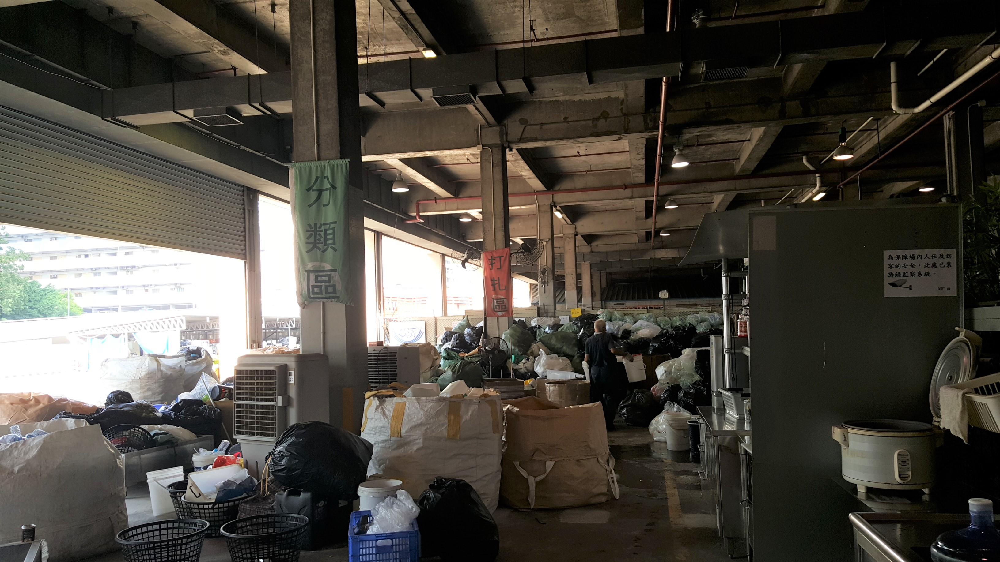
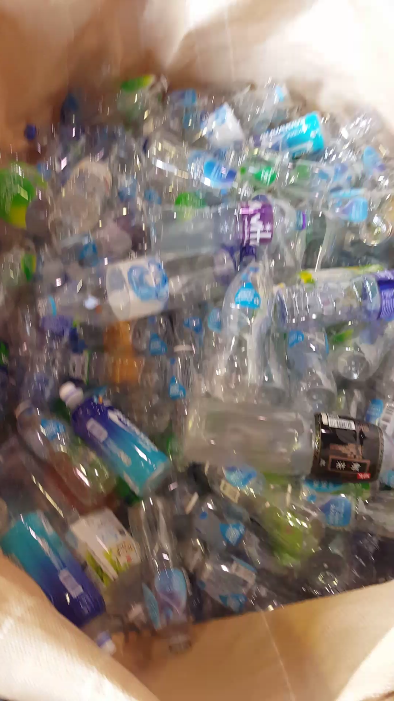
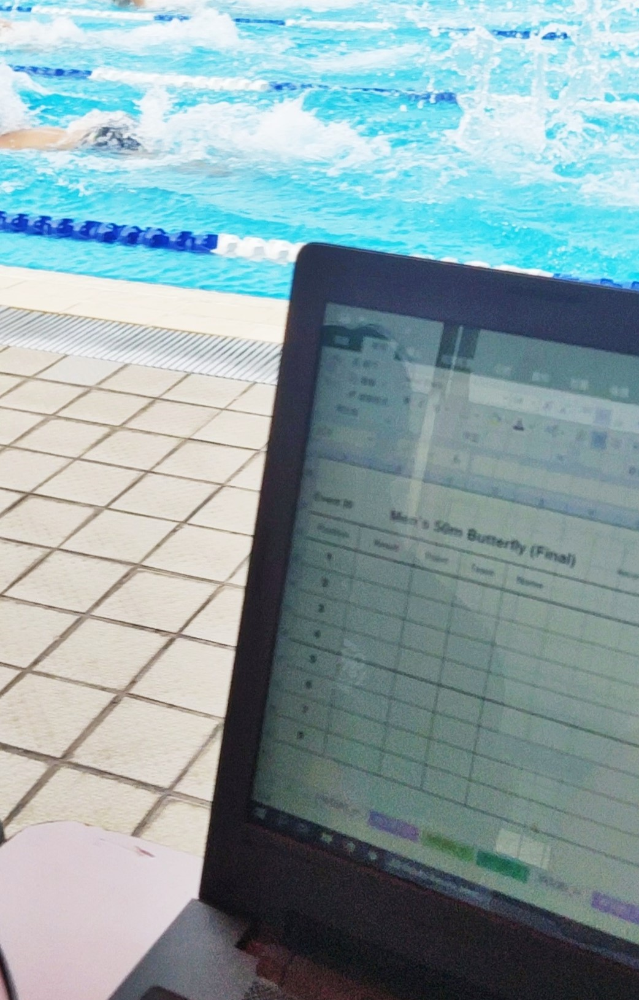

Assisted in Food Angel
Assisted in Bread Run and other programs through school volunteering club
Participated in Soup of Love through HKUST Connect
Helped record heat results in Excel spreadsheets during the HKUST Intramural Aquatic Meet
Helped monitor livestream of event during 2015 FIRST Tech Challenge at Macquarie University


